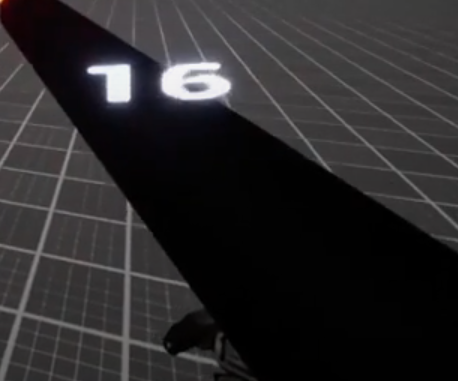
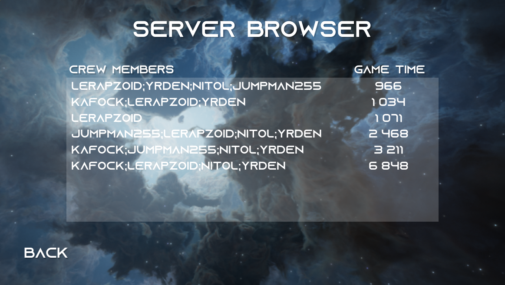

Tachyon
Tech Stack
- Unreal Engine 4
- C++
- UI/UX
- C#
- Docker
- AWS

Context
Tachyon is a 3D multiplayer game created as part of the final year project of the DDJV, the video game development training offered
at the University of Sherbrooke.
In this game, the players evolve together in space in order to destroy a galactic threat together. In their journeys,
players encounter many obstacles such as ships and creatures that wish to prevent them from completing their mission.
The game is inspired by FTL and Barautrauma.
We made this game with a team of 5 students in a period of 6 months in which we learned to master
the Unreal Engine as well as various technologies including the Gameplay Ability System (GAS) in order to offer an interesting experience to players.
In this project, my contribution was mainly on the management of UI/UX, the management of game statistics in parallel of certain gameplay elements.
UI/UX
Our goal with Tachyon, given that our game is in a spatial context, was to create the most immersive experience possible. This has therefore been a significant challenge for the UI. A good example is ammunition management. The classic approach is to put a munition counter frequently at the bottom left of the screen so that the player can know how many munitions he has left. For Tachyon, we have decided to display it like a hologram above the weapon, because given the futuristic context, it is conceivable that our characters have technology that knows in real time how many munitions, it remains in our weapon. In this way, we accentuate the realism of our universe which allows a better immersion of our player in the game.
Leaderboard
In Tachyon, we have set up a ranking that highlights the players who succeeded with the threat as quickly as possible. This one recovers the names of the crew members as well as the time they took to save the universe. For this, we used an AWS server that allows us to receive and store the times made by our players and display them in the ranking.
